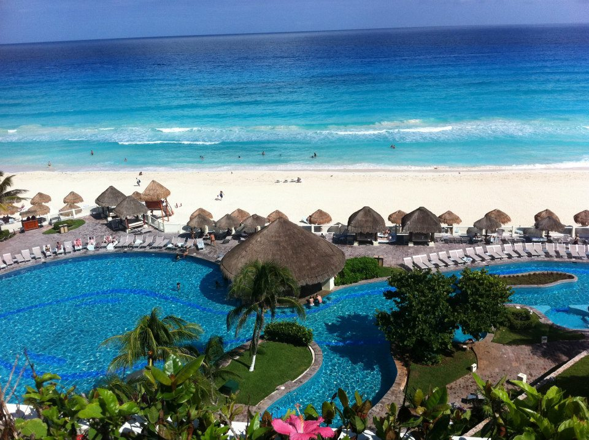
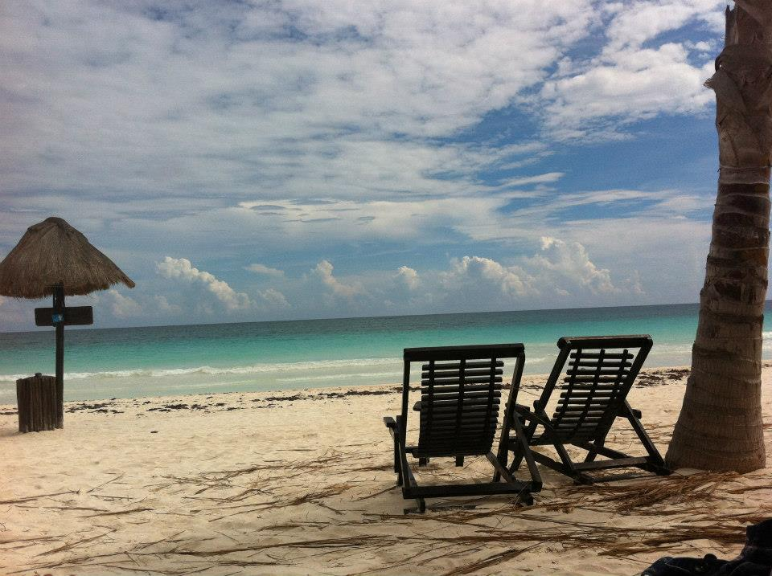

Mexico
|  |
Cancun:Sunny Cancun has much more to offer than its party-town reputation might suggest. Plenty of gorgeous, drama-free family resorts cater to folks who want to experience the tropical Yucatan climate. There are significant Mayan ruins here, such as El Rey and the Yamil Lu'um, a crumbling tower of pale gray stone. Learn more about this ancient civilization at the Museo Maya de Cancun. For a literal taste of Mexico, take a tour of the Museo Sensorial del Tequila. |
|  |
Tulum:Mayan ruins tower over the sea in Tulum. The formerly walled city was one of the last to be built by the Mayans, and its archaeological sites are incredibly well preserved. Take a break from the beach to visit El Castillo, the Temple of the Frescoes, and the Temple of the Descending God. Explore an underground river under a canopy of stalactites in the sacred caverns of LabnaHa Eco Park, or dive into Cenote Dos Ojos to snorkel inside of caves in the middle of a forest. |